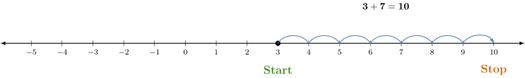

Adding Integers on a Number Line
Another way to visualize addition is to add on a number line.
Steps for Adding Integers on a Numberline
- Locate the first number on the number line.
- If the second number is positive, move to the right that many units.
- If the second number is negative, take the absolute value of the number
and move to the left that many units.
Use a numberline to find the sum \(3+7.\)
Start at \(3,\) then move \(7\) units to the right. Movement is to the right, since a positive
number is added to \(3.\)

Show Alt Text
Horizontal number line from negative 5 to 10, with tick marks and labels for each
integer. There is a solid black dot at 3. The word “Start” is written below the number
3 in green. A series of connected, blue arches move rightward from 3, landing on each
integer until stopping with a right-pointing arrow at 10. The word “Stop” is written
below the number 10 in orange. The equation ”3 plus 7 equals 10” is displayed
centered above the arches.
Use a numberline to find the sum \(3+(-7).\)
Start at \(3\) then move \(|-7| = 7\) units to the left. Movement is to the left, since a negative
number is added to \(3.\)
Show Alt Text
Horizontal number line from negative 5 to 10, with tick marks and labels for each
integer. There is a solid black dot at 3. The word “Start” is written below the number
3 in green. A series of connected, blue arches move leftward from 3, landing on each
integer until stopping with a left-pointing arrow at negative 4. The word
“Stop” is written below the number negative 4 in orange. The equation “3
plus negative 7 equals negative 4” is displayed centered above the arches.
Add using the number line shown below.
\[ -2 + 3 = \answer {1}\]
Show Alt Text
Horizontal
number line from \(-5\) to 5, with tick marks and labels for each integer.
Add using the number line shown below.
\[ -12 + (-3) = \answer {-15} \]
Show Alt Text
Horizontal
number line from negative 18 to negative 8, with tick marks and labels for each
integer spanning the full width.
Add using the number line shown below.
\[ -1 + 4 =\answer {3} \]
Show Alt Text
Horizontal
number line from negative 5 to 5, with tick marks and labels for each integer.
Does the answer to the previous problem change if you switch the order of the
numbers and find the value of
\(4 + (-1)?\)
No Yes
That’s right, the answer does NOT change! This is due to a property of addition
called the Commutative Property. The Commutative Property of Addition
states that numbers can be added in any order and the result will be the same.
Therefore, \(-1 + 4 = 4 + (-1).\)